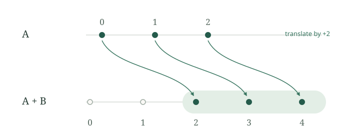

Throughout this note, \(G\) is an additive abelian group and our sets are finite subsets of \(G\). The sumset of \(A\) and \(B\) is
We count distinct sums, not the pairs that produce them. For instance, \(\{0,1\}+\{0,1\}=\{0,1,2\}\): four pairs, but only three sums.
| \(a\) | \(b\) | \(a+b\) |
|---|---|---|
| \(0\) | \(0\) | \(0\) |
| \(0\) | \(1\) | \(1\) |
| \(1\) | \(0\) | \(1\) |
| \(1\) | \(1\) | \(2\) |
For a fixed \(b\in G\), the translation by \(b\) is the map \(x\mapsto x+b\). The translated set is
This notation distinguishes adding one fixed element from adding all the elements of a set.
If \(A\) and \(B\) are nonempty, then \(A+B\) is nonempty.
Proof
Choose \(a\in A\) and \(b\in B\). By definition, \(a+b\in A+B\), so the sumset has an element. □
If \(A\) and \(B\) are finite, nonempty subsets of an additive abelian group, then
A sumset is at least as large as either of its summands.
Proof
Choose any element \(b_0\in B\). The translation from Translation gives the map
Every image belongs to \(A+B\), by the definition of a sumset. And no two elements merge: if \(a+b_0=a'+b_0\), cancellation gives \(a=a'\). So \(f\) is injective, and hence
Now choose \(a_0\in A\) and repeat the argument with \(b\mapsto a_0+b\). This gives \(|B|\leq |A+B|\). Together with \eqref{eq:left-bound}, this shows that the sumset is at least as large as each summand, and hence at least as large as their maximum. □

For every finite subset \(A\subseteq G\),
Proof
Every element of \(A+\{0\}\) has the form \(a+0=a\) with \(a\in A\). Conversely, each \(a\in A\) can be written as \(a+0\), so it lies in the sumset. □
For nonempty \(A\), this attains equality in Sumset lower bound: adding a singleton need not increase cardinality.
Would Sumset lower bound still hold if one summand were empty?
No. Take \(A=\varnothing\) and \(B=\{0\}\) in the integers. There are no pairs to add, so \(A+B=\varnothing\), while
Swapping the two sets gives the same obstruction. Both nonemptiness assumptions are necessary.